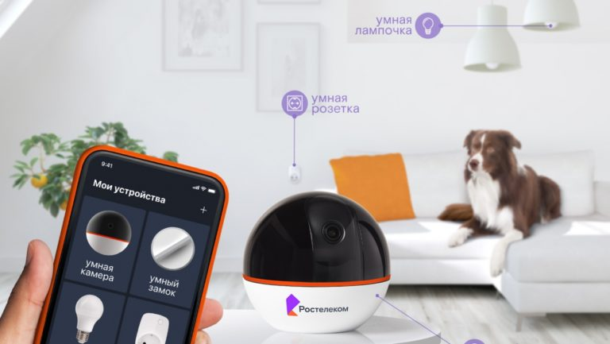

Комплект Умный Дом был разработан с учётом того, чтобы услугой сумели воспользоваться даже те люди, которые не имеют достаточной техподготовки. Это касается, как с установкой устройств, так и с дальнейшим пользованием системы.
Ростелеком предлагает такие инструменты для того, чтобы контролировать оборудование, присутствующее в квартире:
•Посещать кабинет, расположенный на веб-портале сервиса, можно с любого ПК;
•Приложение для портативного гаджета, работающего на платформе Андроид;
•Софт для айфонов.
Несмотря на то, какой инструмент управления выбрал пользователь, ему предоставляется возможность, увидеть в режиме онлайн, происходящее в доме. А всё благодаря установленным видеокамерам. Помимо этого, в личном кабинете клиента, доступны такие возможности:
•Записи видео хранятся неделю;
•Бессрочно сохраняются кусочки записей, которые выбрал клиент;
•Оповещения о наличии сбоя устройств;
•Оповещения о том, что сработали датчики;
•Анализ функционирования видеокамеры;
•Информация о действиях оборудования при реакции датчиков.
Перед тем, как устройства начнут работать, следует:
•Осуществить монтаж всех приспособлений и произвести настройку;
•Скачать программу Умный дом Ростелеком на мобильный;
•Пройти регистрацию на официальном сайте поставщика либо в приложении.
•После подтверждения регистрации, нужно войти в кабинет и перейти к настройке системы.
Умный дом обладает следующими преимуществами:
•Есть возможность, управлять устройствами, как через мобильный телефон, установив приложение, так и с помощью компьютера. В результате, о любых непредвиденных ситуациях вы тут же получите уведомление;
•Клиент сможет следить за жильём, с любой точки земного шара, где бы он ни находился;
•Простой монтаж оборудования, лёгкая настройка и управление;
•Доступная ценовая политика;
•Несколько режимов управления, в зависимости от которых переключается набор сценариев - когда вы дома, на работе или в отъезде.
Недостатки:
•Значительные затраты на установку;
•Надежное подключение к сети Интернет имеет решающее значение.
•Вопросы безопасности;
•Технологические проблемы в подключенных домах;
•Беспомощность, если технология потерпит неудачу;
•Проблемы совместимости между устройствами;
•Возможны счкачки напряжения;
•Проблемы кофеденциальности.

Платформы для реализации умного дома:
◊ Rubetek
⚙ На главную
◄ Yandex